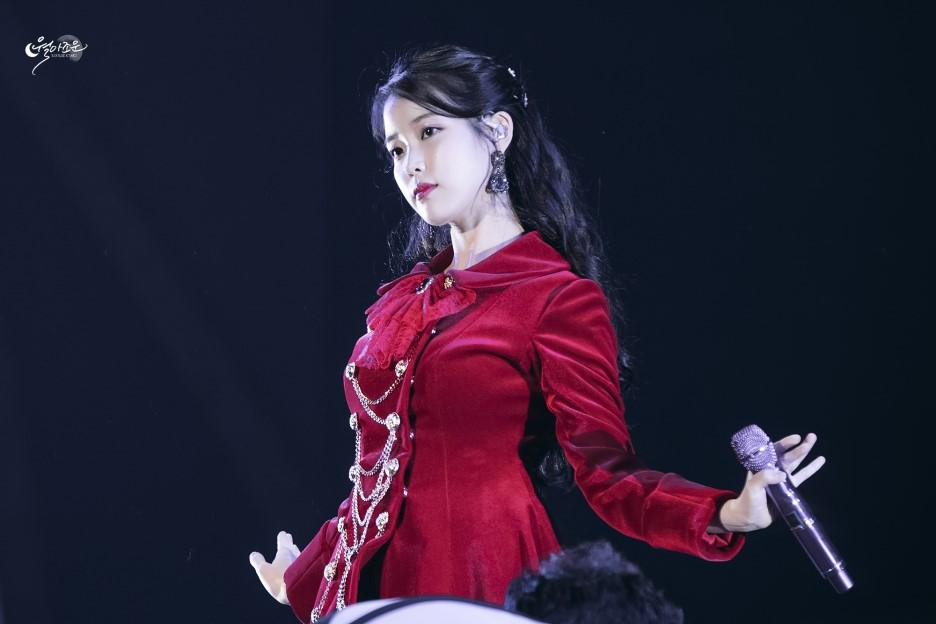

“다시 태어나도 아이유로 살고 싶어요”자존감. 방송이든 공연이든 자신의 자존감에 대한 늘 부정적이고 회의적인 자세를 견지하던 그녀가 1만 2천여 관객들 앞에서 “여러분들이 저를 얼마나 좋아하는지 알게 됐어요”라며 “다시 태어나도 또 아이유로 살고 싶어요”라 의연하고 당당한 모습을 보였다.
보다 세세하고 입체적인 콘서트 실황을 전하기 위해 체리시의 후기 대신(제 글은 쓰고 보니 너무 감성적이더군요_ 써둔 글 전체를 삭제했습니다) 팬클럽 유애나 회원이자 우리 블로그의 이웃인 ‘하늘에강림하는창’ 님의 후기를 대신 게시하게 됐습니다. 참고하시기 바랍니다.